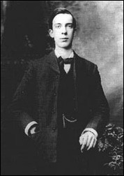
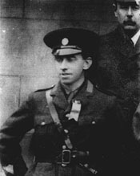

Some Notable People Involved in the Rising...
Eamon De Valera
- Born: October 14, 1882
- Died: August 29, 1975
- Brief Information: De Valera was a Leader in the war of Independence and a former Irish Rebellion Brotherhood member. He founded Fianna Fail, became the 3rd President of Ireland and also introduced a new constitution "Bunreacht na hÉireann". Only rebellion commmandant who wasn't executed.
Thomas J. Clarke
- Born: March 11, 1858
- Died: May 3, 1916
- Brief Information: Believed to have been the one most responsible for the Easter Rising. Former Irish Rebellion Brotherhood member and commandant. One of seven men who signed the Proclamation of the Republic. Refused to have any honours or military-rank though he was actively involved in the Rising.
Joseph Mary Plunkett
- Born: November 21, 1887
- Died: May 4, 1916
- Brief Information: Co-founder of the Irish Esperanto League. Former Irish Rebellion Brotherhood member. Came up with the main plan which was used in for the Rising.
Eamon Ceannt
- Born: September 21, 1881
- Died: May 8, 1916
- Brief Information: Co-Founder Cumann na bPíobairí (The Pipers Club). Irish Rebellion Brotherhood in member. Declined position in the Civil Service; felt he would be working for the British. Signed the Proclamation of Independence. Commandant of the 4th battalion of the Volunteers.
Thomas Kent
- Born: August 29, 1865
- Died: May 9, 1916
- Brief Information: From a Nationalist family. Was not a member of the Irish Rebellion Brotherhood. Executed for mainly for being symphatising with the cause of the Rising and armed rebellion although he did not participate in the Rising due to the countermanding of the mobilisation order.
Edward Daly
- Born: February 25, 1891
- Died: May 4, 1916
- Brief Information: Irish Rebellion Brotherhood member. Recieved the rank of captain as an Irish Volunteer member. Eventually recieved rank of Commandant of 1st battalion in 1915. Loved by men in his battalion.

William Pearse
- Born: November 15, 1881
- Died: May 4, 1916
- Brief Information: Member of the Irish Volunteers and took part of in the Republican movement. Brother of Patrick Pearse with whom he was very close to. Pearse street named in honour of him and his brother.

Thomas MacDonagh
- Born: February 1, 1878
- Died: May 3, 1916
- Brief Information: Irish Republican Brotherhood and Irish Volunteer member. Co-founder of the teachers trade union ASTI (Association of Secondary Teachers in Ireland). Commandant of Dublin's 2nd battalion. Signed the Proclamation of the Republic.
Constance Markievicz
- Born: February 4, 1868
- Died: July 15, 1927
- Brief Information: First woman to be elected in the House of Commons but refused her seat. One of the first women to hold a cabinet position in the world. Did not face execution due to her sex. Memeber of the Irish Citizen Army. Designed the Citizen Army uniform and composed its anthem.